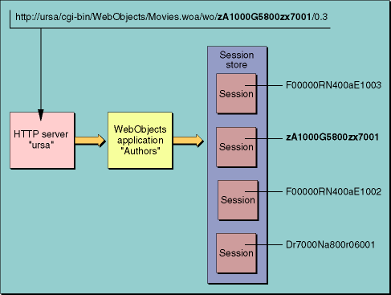

| PATH |

A session is a period of time in which one user interacts with your application. Since each application can have multiple users simultaneously, it may have multiple Session objects. Each session has its own data and its own cached copies of the components that the user has requested, as shown in Figure 7-1.
Figure 7-1 Relationship between application and session
The session is represented as an instance of the Session class
(Session.java). Initially,
the session has only WebObjects-provided behavior, but you can add
your own methods and variables. For example, if you were building
an online shopping application, the session would be an appropriate
place to store a user's shopping cart, because the session is
tied to one particular user and persists as long as the user is
using the application.
When an incoming request is processed, WebObjects automatically activates the Session instance associated with the user who originated the request, as described in "Request Processing".
The WOComponent class includes a method for accessing the
currently active session. Since all your components inherit from
this class and WebObjects automatically activates the correct session
when a request is processed, calling the session method
from your component (or in a keypath) provides you with the session
for the current user.
© 2001 Apple Computer, Inc.